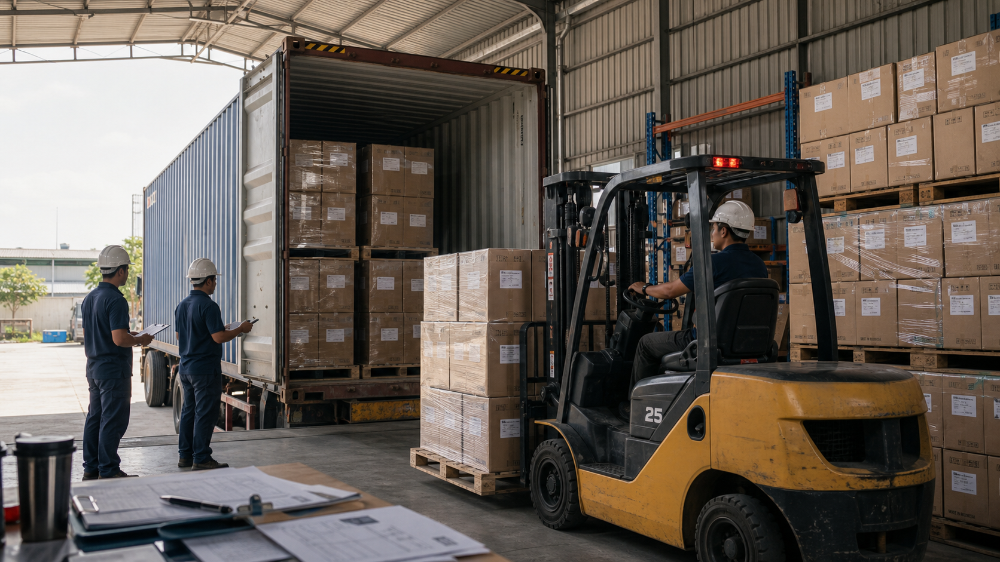

Spices & Seasonings
Pepper, clove, nutmeg, cinnamon, vanilla
CU-ANDONG connects global buyers with verified Indonesian suppliers through structured RFQs, transparent documentation, inspection gates, and destination-ready shipment coordination.

Pepper, clove, nutmeg, cinnamon, vanilla
Arabica, Robusta, green bean, roasted
Frozen seafood, seaweed, chilled handling
Sheets, rolls, machined or packaged materials
Each response is structured by specification, volume, destination, Incoterm, inspection requirement, and certificate availability.
Certificate availability checked Destination-dependentFrom quote basis to document packet, we manage details that secure shipments.